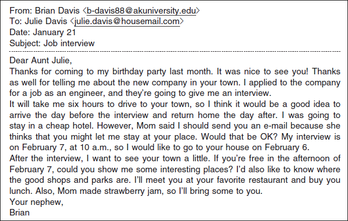
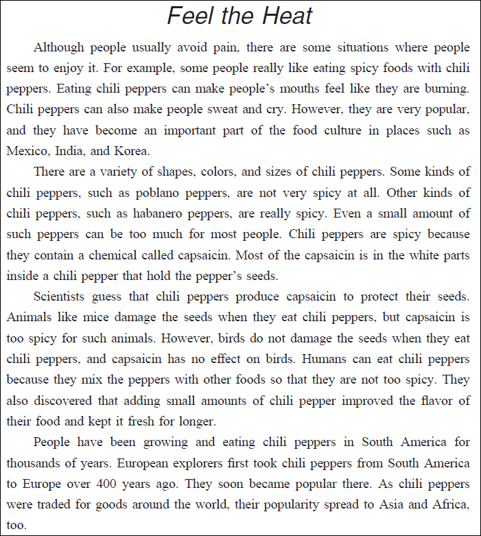

英語検定 準２級(2023年第3回No.4) 残り時間が0になると、自動的に採点します。 時間内に終了する場合は、一番下の「採点する」のボタンを押してください。 残り時間： 分 秒 3-4 英語検定(準２級) 筆記 2023年第3回(No.31～No.37) 各１０点 × 7問 ＝ 7０点満点 次の英文を読み、(31)から(33)の各質問に最も適切なものを、1～4 の中から一つ選びなさい。  問31 Question: What did Aunt Julie do for Brian? 答え： ( 31 ) (1) She held a birthday party for him. (2) She introduced him to an engineer. (3) She asked her boss to give him a job. (4) She told him about a new company. 問32 Question: What does Brian say he will do on February 6? 答え： ( 32 ) (1) Spend the night at a cheap hotel. (2) Send another email to his aunt. (3) Have an interview in another town. (4) Travel to his aunt's town by car. 問33 Question: In the afternoon on February 7, Brian wants to (1) or (2) or (3) or (4) 答え： ( 33 ) (1) show his aunt an interesting place he found. (2) make some strawberry jam with his mother. (3) meet his aunt at her favorite restaurant. (4) buy lunch at a shop and eat it in a nice park. 次の英文を読み、(34)から(37)の各質問に最も適切なものを、1～4 の中から一つ選びなさい。  問34 Question: Eating spicy foods with chili peppers (1) or (2) or (3) or (4) 答え： ( 34 ) (1) is recommended by doctors in some situations. (2) has become very popular in some parts of the world. (3) usually helps people to avoid feeling pain. (4) makes people sweat less when the weather is hot. 問35 Question: What is one difference between poblano peppers and habanero peppers? 答え： ( 35 ) (1) Habanero peppers are much larger than poblano peppers. (2) Habanero peppers contain a smaller number of seeds. (3) Poblano peppers are available in a wider variety of colors. (4) Poblano peppers have less capsaicin than habanero peppers. 問36 Question: Why do chili peppers probably make capsaicin? 答え： ( 36 ) (1) Because humans grow chili peppers with other foods. (2) Because their original flavor did not attract many birds. (3) So that the peppers stay fresh for a longer period of time. (4) So that their seeds will not be damaged by animals. 問37 Question: When did chili peppers become popular in Europe? 答え： ( 37 ) (1) After it became possible to trade them for goods around the world. (2) Since they were first grown and eaten there thousands of years ago. (3) Over 400 years after they were first taken to Asia and Africa. (4) Soon after explorers brought them back from South America.


 英語検定 準２級(2023年第3回No.4)
英語検定 準２級(2023年第3回No.4)